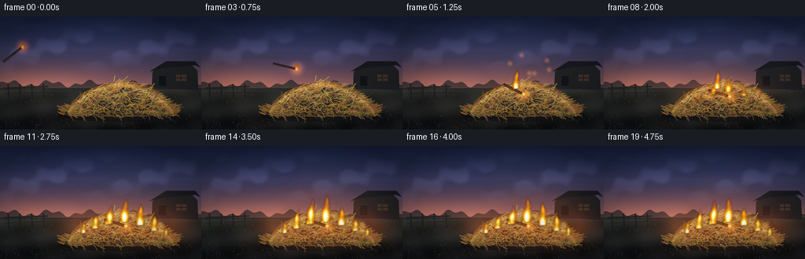
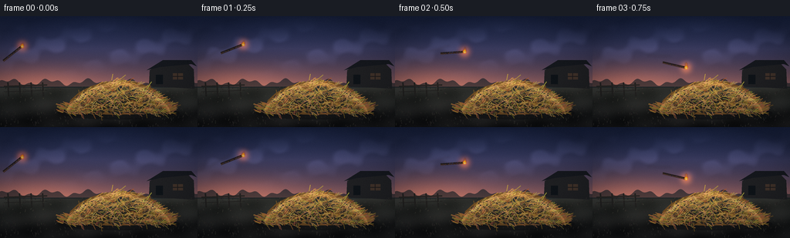
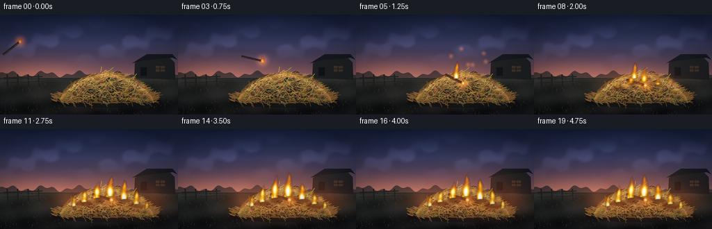

CODING AGENTS AS PIXEL WORLD MODELS
traex/DeepSeek-V4.1-Flash · phygen_143
点击播放 · 原生 RGB 像素
逐轮保存的候选
回放视频、检查图与代码变化。
每份候选均可单独播放。实际图片检查记录在下方工具轨迹中。
候选 01播放与检查图
点击播放 · 原生 RGB 像素


展开代码变化
--- 上一保存版本
+++ 本次保存版本
@@ -0,0 +1,637 @@
+from __future__ import annotations
+
+import json
+import math
+from pathlib import Path
+
+import numpy as np
+from PIL import Image, ImageDraw, ImageFilter
+
+import artifact_io
+
+
+CASE_DIR = Path(__file__).resolve().parent
+SPEC = json.loads((CASE_DIR / "task_spec.json").read_text())
+W = int(SPEC["width"])
+H = int(SPEC["height"])
+N = int(SPEC["frames"])
+FPS = float(SPEC["fps"])
+
+# Supersampling keeps the straw and small embers from turning into single-pixel
+# visual noise when the frames are reduced to the requested resolution.
+S = 4
+RW, RH = W * S, H * S
+HORIZON = 0.635 * H
+
+
+def clamp01(value):
+ return np.clip(value, 0.0, 1.0)
+
+
+def smoothstep(edge0, edge1, value):
+ t = np.clip((value - edge0) / (edge1 - edge0), 0.0, 1.0)
+ return t * t * (3.0 - 2.0 * t)
+
+
+def mix(a, b, t):
+ return a + (b - a) * t
+
+
+def rgba_layer():
+ return Image.new("RGBA", (RW, RH), (0, 0, 0, 0))
+
+
+def np_to_image(array):
+ return Image.fromarray(np.clip(array, 0, 255).astype(np.uint8), "RGB")
+
+
+def image_to_np(image):
+ return np.asarray(image.convert("RGB"), dtype=np.float32)
+
+
+def screen(base, layer, opacity=1.0):
+ layer = np.clip(layer, 0.0, 255.0)
+ out = 255.0 - (255.0 - base) * (255.0 - layer * opacity) / 255.0
+ return np.clip(out, 0.0, 255.0)
+
+
+def make_background():
+ yy, xx = np.mgrid[0:RH, 0:RW].astype(np.float32)
+ xn = xx / RW
+ yn = yy / RH
+ horizon_px = HORIZON * S
+
+ sky_t = clamp01(yy / horizon_px)
+ top = np.array([14, 23, 45], dtype=np.float32)
+ mid = np.array([53, 51, 78], dtype=np.float32)
+ low = np.array([151, 91, 79], dtype=np.float32)
+ sky = top[None, None, :] * (1.0 - sky_t[..., None])
+ sky += mid[None, None, :] * (0.82 - np.abs(sky_t[..., None] - 0.46))
+ sky += low[None, None, :] * np.power(sky_t[..., None], 3.4)
+
+ # Quiet, streaky twilight clouds.
+ cloud_wave = (
+ np.sin(xx * 0.012 + yy * 0.031)
+ + 0.55 * np.sin(xx * 0.026 - yy * 0.048 + 1.7)
+ + 0.32 * np.sin(xx * 0.057 + yy * 0.019 + 0.3)
+ )
+ cloud_band = np.exp(-((yy - RH * 0.28) / (RH * 0.16)) ** 2)
+ cloud = cloud_band * smoothstep(-0.2, 1.1, cloud_wave)
+ sky += np.array([30, 31, 43], dtype=np.float32)[None, None, :] * cloud[..., None] * 0.55
+
+ # Warm sunset glow near the left horizon.
+ sun_glow = np.exp(-(((xx - RW * 0.17) / (RW * 0.31)) ** 2 + ((yy - horizon_px) / (RH * 0.19)) ** 2))
+ sky += np.array([54, 24, 9], dtype=np.float32)[None, None, :] * sun_glow[..., None]
+
+ ground_t = clamp01((yy - horizon_px) / (RH - horizon_px))
+ ground_top = np.array([50, 50, 43], dtype=np.float32)
+ ground_bottom = np.array([29, 25, 21], dtype=np.float32)
+ ground = ground_top[None, None, :] * (1.0 - ground_t[..., None])
+ ground += ground_bottom[None, None, :] * ground_t[..., None]
+ ground += 7.0 * np.sin(xx * 0.009 + yy * 0.053)[..., None]
+ ground += 4.0 * np.sin(xx * 0.033 - yy * 0.014 + 0.8)[..., None]
+
+ scene = np.where((yy < horizon_px)[..., None], sky, ground)
+
+ # Distant tree line, with a broken, hand-shaped silhouette.
+ tree_top = horizon_px - (6.0 + 3.0 * np.sin(xx * 0.031) + 2.0 * np.sin(xx * 0.083 + 1.4)) * S
+ tree_mask = (yy > tree_top) & (yy < horizon_px + 1.2 * S)
+ scene[tree_mask] = scene[tree_mask] * 0.35 + np.array([18, 27, 30], dtype=np.float32) * 0.65
+
+ # A field line and a soft atmospheric haze just above the ground.
+ haze = np.exp(-((yy - horizon_px) / (RH * 0.07)) ** 2)
+ scene = scene * (1.0 - haze[..., None] * 0.10) + np.array([81, 70, 65], dtype=np.float32) * haze[..., None] * 0.10
+
+ image = np_to_image(scene)
+ draw = ImageDraw.Draw(image)
+
+ # Dark barn and fence establish scale without competing with the hay pile.
+ def p(x, y):
+ return (x * S, y * S)
+
+ draw.polygon(
+ [p(193, 91), p(194, 70), p(207, 62), p(244, 62), p(251, 69), p(252, 94)],
+ fill=(34, 32, 31),
+ )
+ draw.polygon([p(190, 70), p(211, 57), p(248, 57), p(255, 65), p(248, 62), p(207, 66)], fill=(24, 24, 26))
+ draw.rectangle([p(202, 76), p(211, 88)], fill=(17, 19, 20))
+ draw.rectangle([p(224, 74), p(237, 82)], fill=(68, 51, 39))
+ draw.line([p(224, 78), p(237, 78)], fill=(31, 26, 24), width=S)
+ draw.line([p(230, 74), p(230, 82)], fill=(31, 26, 24), width=S)
+
+ for fence_x in (10, 25, 40, 55):
+ draw.line([p(fence_x, 86), p(fence_x + 1, 104)], fill=(38, 34, 29), width=2 * S)
+ draw.line([p(5, 91), p(61, 89)], fill=(42, 37, 31), width=2 * S)
+ draw.line([p(5, 98), p(61, 96)], fill=(37, 33, 28), width=S)
+
+ # Fine ground texture and sparse field grass.
+ rng = np.random.default_rng(14)
+ for _ in range(440):
+ gx = rng.uniform(0, W)
+ gy = rng.uniform(HORIZON + 1, H)
+ length = rng.uniform(1.0, 3.8) * (0.45 + (gy - HORIZON) / H)
+ tone = int(rng.integers(38, 62))
+ draw.line(
+ [p(gx, gy), p(gx + rng.uniform(-0.7, 1.0), gy - length)],
+ fill=(tone, tone - int(rng.integers(2, 9)), int(tone * 0.78)),
+ width=S,
+ )
+
+ return image
+
+
+BASE = make_background()
+
+
+def pile_top(x):
+ half = 67.0
+ u = np.clip((np.asarray(x) - 153.0) / half, -1.0, 1.0)
+ return 122.0 - 38.0 * np.power(np.clip(1.0 - np.abs(u) ** 1.55, 0.0, 1.0), 0.72)
+
+
+def make_pile_mask():
+ yy, xx = np.mgrid[0:RH, 0:RW].astype(np.float32)
+ xo = xx / S
+ yo = yy / S
+ top = pile_top(xo)
+ base_line = 126.0 + 2.8 * np.sin(xo * 0.17) + 1.2 * np.sin(xo * 0.43)
+ mask = (xo >= 86.0) & (xo <= 220.0) & (yo >= top) & (yo <= base_line)
+ return mask
+
+
+PILE_MASK = make_pile_mask()
+
+
+def make_hay_pile():
+ layer = Image.new("RGBA", (RW, RH), (0, 0, 0, 0))
+ draw = ImageDraw.Draw(layer)
+
+ def p(x, y):
+ return (x * S, y * S)
+
+ # Ground shadow under the mound.
+ draw.ellipse([p(75, 117), p(233, 134)], fill=(20, 17, 14, 145))
+ draw.ellipse([p(88, 119), p(220, 129)], fill=(12, 11, 10, 120))
+
+ silhouette = [
+ p(87, 121),
+ p(91, 109),
+ p(102, 99),
+ p(117, 91),
+ p(137, 85),
+ p(158, 83),
+ p(179, 86),
+ p(199, 94),
+ p(214, 106),
+ p(220, 120),
+ p(205, 125),
+ p(181, 127),
+ p(151, 128),
+ p(121, 127),
+ p(97, 125),
+ ]
+ draw.polygon(silhouette, fill=(113, 76, 34, 255))
+
+ # Mottled shadow and warm mass underneath the individual straws.
+ rng = np.random.default_rng(81)
+ for _ in range(240):
+ x = rng.uniform(91, 216)
+ y = rng.uniform(93, 125)
+ if y < float(pile_top(x)) + 1.0:
+ continue
+ width = rng.uniform(2.5, 9.0)
+ height = rng.uniform(1.0, 4.0)
+ shade = rng.uniform(0.55, 1.05)
+ color = (
+ int(np.clip(114 * shade, 0, 255)),
+ int(np.clip(76 * shade, 0, 255)),
+ int(np.clip(31 * shade, 0, 255)),
+ int(rng.integers(24, 58)),
+ )
+ draw.ellipse([p(x - width, y - height), p(x + width, y + height)], fill=color)
+
+ # Hundreds of curved straws give the pile a fibrous, readable silhouette.
+ for _ in range(1050):
+ x = rng.uniform(87, 220)
+ top = float(pile_top(x))
+ y = rng.uniform(top - 2.0, 126.5)
+ if y < top - 2.5:
+ continue
+ angle = rng.normal(-0.10, 0.62)
+ length = rng.uniform(2.5, 12.0)
+ bend = rng.uniform(-2.0, 2.0)
+ x2 = x + math.cos(angle) * length
+ y2 = y + math.sin(angle) * length
+ xm = (x + x2) * 0.5 + bend * 0.30
+ ym = (y + y2) * 0.5 - abs(bend) * 0.45
+ height_factor = np.clip((126.0 - y) / 40.0, 0.0, 1.0)
+ lit = rng.random() < (0.33 + 0.45 * height_factor)
+ if lit:
+ color = (
+ int(rng.integers(173, 226)),
+ int(rng.integers(125, 179)),
+ int(rng.integers(54, 93)),
+ 220,
+ )
+ else:
+ color = (
+ int(rng.integers(112, 171)),
+ int(rng.integers(77, 123)),
+ int(rng.integers(31, 67)),
+ 220,
+ )
+ draw.line([p(x, y), p(xm, ym), p(x2, y2)], fill=color, width=max(1, S - rng.integers(0, 2)))
+
+ # A few loose stalks spill beyond the main mound.
+ for _ in range(95):
+ side = -1 if rng.random() < 0.5 else 1
+ x = 153 + side * rng.uniform(57, 72)
+ y = rng.uniform(114, 126)
+ length = rng.uniform(4, 14)
+ draw.line(
+ [p(x, y), p(x + side * length * 0.72, y - length * 0.25)],
+ fill=(int(rng.integers(133, 198)), int(rng.integers(92, 143)), int(rng.integers(37, 72)), 230),
+ width=S,
+ )
+
+ # Soft top light to separate the mound from the twilight field.
+ yy, xx = np.mgrid[0:RH, 0:RW].astype(np.float32)
+ xo = xx / S
+ yo = yy / S
+ rim = np.exp(-((yo - pile_top(xo) - 2.0) / 4.3) ** 2) * PILE_MASK
+ arr = np.asarray(layer, dtype=np.float32)
+ arr[..., :3] += rim[..., None] * np.array([53, 42, 25], dtype=np.float32)
+ layer = Image.fromarray(np.clip(arr, 0, 255).astype(np.uint8), "RGBA")
+ return layer
+
+
+HAY_PILE = make_hay_pile()
+
+
+def stick_state(frame_index):
+ f = float(frame_index)
+ if f <= 4.0:
+ u = np.clip(f / 4.0, 0.0, 1.0)
+ p0 = np.array([17.0, 48.0])
+ p1 = np.array([72.0, 25.0])
+ p2 = np.array([140.0, 91.0])
+ pos = (1 - u) ** 2 * p0 + 2 * (1 - u) * u * p1 + u**2 * p2
+ angle = math.radians(-38.0 + 68.0 * u)
+ return pos, angle, u, True
+
+ settle = smoothstep(4.0, 7.0, f)
+ pos = mix(np.array([140.0, 91.0]), np.array([147.0, 98.0]), settle)
+ angle = math.radians(mix(30.0, 17.0, settle))
+ return pos, angle, 1.0, False
+
+
+def draw_stick(scene, frame_index, burn):
+ scene = image_to_np(scene)
+ pos, angle, flight_u, flying = stick_state(frame_index)
+ layer = rgba_layer()
+ glow = rgba_layer()
+ draw = ImageDraw.Draw(layer)
+ gdraw = ImageDraw.Draw(glow)
+ length = 29.0 if not flying else 31.0
+ width = 3.7 if not flying else 3.1
+ direction = np.array([math.cos(angle), math.sin(angle)], dtype=np.float32)
+ normal = np.array([-direction[1], direction[0]], dtype=np.float32)
+
+ def p(point):
+ return (float(point[0] * S), float(point[1] * S))
+
+ # A faint motion ghost communicates the throw in the first second.
+ if flying and frame_index > 0:
+ old_pos, old_angle, _, _ = stick_state(frame_index - 0.65)
+ old_dir = np.array([math.cos(old_angle), math.sin(old_angle)])
+ ghost = Image.new("RGBA", (RW, RH), (0, 0, 0, 0))
+ gd = ImageDraw.Draw(ghost)
+ gd.line(
+ [p(old_pos - old_dir * length * 0.48), p(old_pos + old_dir * length * 0.52)],
+ fill=(78, 45, 28, 34),
+ width=max(2, int(width * S * 0.8)),
+ )
+ ghost = ghost.filter(ImageFilter.GaussianBlur(1.4 * S))
+ layer = Image.alpha_composite(layer, ghost)
+ draw = ImageDraw.Draw(layer)
+
+ tail = pos - direction * length * 0.52
+ tip = pos + direction * length * 0.48
+ draw.line([p(tail), p(tip)], fill=(39, 28, 22, 255), width=max(2, int(width * S)))
+ draw.line(
+ [p(tail + normal * 0.7), p(tip + normal * 0.5)],
+ fill=(86, 54, 35, 210),
+ width=max(1, int(width * S * 0.33)),
+ )
+
+ # Irregular charred patches along the wood.
+ rng = np.random.default_rng(900 + frame_index)
+ for j in range(7):
+ u = 0.16 + j * 0.11
+ center = mix(tail, tip, u)
+ radius = rng.uniform(0.5, 1.1)
+ draw.ellipse(
+ [p(center - radius), p(center + radius)],
+ fill=(19, 16, 15, int(rng.integers(115, 205))),
+ )
+
+ # The leading end is visibly alight.
+ ember_radius = 2.2 if flying else 2.7
+ gdraw.ellipse(
+ [p(tip - ember_radius * 2.7), p(tip + ember_radius * 2.7)],
+ fill=(255, 92, 18, 135),
+ )
+ draw.ellipse([p(tip - ember_radius), p(tip + ember_radius)], fill=(255, 148, 33, 255))
+ draw.ellipse([p(tip - ember_radius * 0.55), p(tip + ember_radius * 0.55)], fill=(255, 239, 156, 255))
+
+ glow = glow.filter(ImageFilter.GaussianBlur(3.4 * S))
+ scene = screen(scene, image_to_np(glow), 0.88)
+ scene = Image.alpha_composite(np_to_image(scene).convert("RGBA"), layer).convert("RGB")
+ return scene, tip
+
+
+def add_tongue(field, bx, by, height, width, phase, frame_index, strength=1.0):
+ if height <= 0.5 or strength <= 0.0:
+ return
+ yy, xx = np.mgrid[0:RH, 0:RW].astype(np.float32)
+ xo = xx / S
+ yo = yy / S
+ v = (by - yo) / max(height, 0.1)
+ valid = (v >= 0.0) & (v <= 1.0)
+ vv = np.clip(v, 0.0, 1.0)
+ sway = width * (0.22 + 0.12 * math.sin(phase)) * (vv**1.55)
+ sway += width * 0.10 * np.sin(vv * 7.2 + phase + frame_index * 0.43) * vv
+ center = bx + sway
+ half_width = width * (0.64 + 0.36 * np.sin(np.pi * vv)) * np.power(1.0 - vv, 0.55) + 0.45
+ dx = (xo - center) / np.maximum(half_width, 0.5)
+ profile = np.exp(-2.45 * dx * dx) * np.power(1.0 - vv, 0.58)
+ profile *= 0.80 + 0.20 * np.sin(vv * 10.0 + phase * 1.7)
+ profile = np.where(valid, profile, 0.0)
+ field[:] = np.maximum(field, profile * strength)
+
+
+def fire_sources(frame_index):
+ f = float(frame_index)
+ pos, angle, _, flying = stick_state(frame_index)
+ direction = np.array([math.cos(angle), math.sin(angle)])
+ stick_tip = pos + direction * (31.0 * 0.48)
+ sources = []
+
+ # Flame carried by the thrown stick.
+ if f < 4.3:
+ strength = 0.62 if flying else 0.80
+ sources.append((float(stick_tip[0]), float(stick_tip[1]), 5.0 + 1.0 * f, 3.4, 1.1 + f, strength))
+
+ # The impact flash and its immediate small flame.
+ impact = smoothstep(3.25, 4.2, f) * (1.0 - smoothstep(7.5, 10.5, f))
+ if impact > 0.0:
+ sources.append((144.0, 92.0, 7.0 + 19.0 * impact, 6.5, 0.4, impact * 0.92))
+
+ spread = smoothstep(5.3, 12.0, f)
+ if spread > 0.01:
+ base_sources = [
+ (106.0, 111.0, 17.0, 4.8, 0.2, 7.5),
+ (121.0, 105.0, 26.0, 6.3, 1.4, 6.8),
+ (139.0, 99.0, 35.0, 8.0, 2.2, 6.1),
+ (158.0, 97.0, 42.0, 9.0, 3.1, 5.8),
+ (178.0, 101.0, 34.0, 7.7, 4.0, 6.4),
+ (196.0, 108.0, 25.0, 6.4, 5.0, 7.2),
+ (211.0, 114.0, 16.0, 4.4, 5.7, 8.1),
+ ]
+ for bx, by, max_h, width, phase, start in base_sources:
+ local = smoothstep(start, start + 4.3, f)
+ if local <= 0.0:
+ continue
+ pulse = 0.84 + 0.16 * math.sin(f * 1.35 + phase)
+ height = max_h * local * pulse
+ sources.append((bx, by, height, width * (0.82 + 0.22 * local), phase, 0.55 + 0.45 * local))
+ return sources
+
+
+def make_smoke(frame_index, burn):
+ if burn <= 0.02:
+ return None
+ f = float(frame_index)
+ layer = rgba_layer()
+ draw = ImageDraw.Draw(layer)
+ rng = np.random.default_rng(410)
+ for i in range(72):
+ phase = rng.uniform(0, 1)
+ life = (f / 6.0 + phase) % 1.0
+ if life < 0.02:
+ continue
+ base_x = rng.normal(157, 19)
+ rise = life * rng.uniform(56, 92)
+ y = 99.0 - rise
+ x = base_x + rise * rng.uniform(0.24, 0.56) + math.sin(life * 5.0 + i) * 5.0
+ radius_x = rng.uniform(10, 27) * (0.7 + life)
+ radius_y = rng.uniform(7, 17) * (0.7 + life)
+ alpha = int(11 + 26 * burn * math.sin(math.pi * min(1.0, life * 1.18)))
+ alpha = int(alpha * (1.0 - smoothstep(0.74, 1.0, life)))
+ color = (55 + int(rng.integers(0, 13)), 57 + int(rng.integers(0, 10)), 59 + int(rng.integers(0, 11)), max(0, alpha))
+ draw.ellipse(
+ [((x - radius_x) * S, (y - radius_y) * S), ((x + radius_x) * S, (y + radius_y) * S)],
+ fill=color,
+ )
+ layer = layer.filter(ImageFilter.GaussianBlur(8.0 * S))
+ return layer
+
+
+def make_char_layer(frame_index, burn):
+ if burn <= 0.02:
+ return None
+ layer = rgba_layer()
+ draw = ImageDraw.Draw(layer)
+ rng = np.random.default_rng(120)
+ centers = [(121, 107), (141, 102), (160, 100), (179, 103), (198, 110)]
+ for i, (cx, cy) in enumerate(centers):
+ local = smoothstep(6.0 + i * 0.55, 11.0 + i * 0.55, float(frame_index))
+ if local <= 0.0:
+ continue
+ rx = rng.uniform(7.5, 12.5) * (0.6 + 0.4 * local)
+ ry = rng.uniform(3.2, 6.0) * (0.7 + 0.3 * local)
+ draw.ellipse(
+ [((cx - rx) * S, (cy - ry) * S), ((cx + rx) * S, (cy + ry) * S)],
+ fill=(23, 17, 14, int(65 + 112 * local)),
+ )
+ layer = layer.filter(ImageFilter.GaussianBlur(1.3 * S))
+ return layer
+
+
+def make_flame_layer(sources, frame_index):
+ field = np.zeros((RH, RW), dtype=np.float32)
+ for bx, by, height, width, phase, strength in sources:
+ add_tongue(field, bx, by, height, width, phase, frame_index, strength)
+ # One or two narrow side tongues make each source feel less like a cone.
+ add_tongue(
+ field,
+ bx - width * 0.42,
+ by + 1.0,
+ height * 0.64,
+ width * 0.48,
+ phase + 1.8,
+ frame_index,
+ strength * 0.62,
+ )
+ add_tongue(
+ field,
+ bx + width * 0.35,
+ by,
+ height * 0.79,
+ width * 0.46,
+ phase + 3.4,
+ frame_index,
+ strength * 0.68,
+ )
+ field = clamp01(field * 1.18)
+
+ r = 255.0 * clamp01(field * 2.5)
+ g = 255.0 * clamp01(np.maximum(field - 0.06, 0.0) * 1.47)
+ b = 255.0 * clamp01(np.maximum(field - 0.53, 0.0) * 2.65)
+ alpha = 255.0 * clamp01(np.maximum(field - 0.015, 0.0) * 1.65)
+ rgba = np.stack([r, g, b, alpha], axis=-1)
+ flame = Image.fromarray(np.clip(rgba, 0, 255).astype(np.uint8), "RGBA")
+ flame = flame.filter(ImageFilter.GaussianBlur(0.55 * S))
+
+ glow_field = np.asarray(flame.filter(ImageFilter.GaussianBlur(5.5 * S)), dtype=np.float32)
+ glow_rgb = glow_field[..., :3] * (glow_field[..., 3:4] / 255.0)
+ return flame, glow_rgb
+
+
+def make_light_glow(sources, frame_index):
+ yy, xx = np.mgrid[0:RH, 0:RW].astype(np.float32)
+ xo = xx / S
+ yo = yy / S
+ total = np.zeros((RH, RW), dtype=np.float32)
+ for bx, by, height, width, phase, strength in sources:
+ if height < 2.0:
+ continue
+ cy = by - height * 0.38
+ sigma_x = max(20.0, width * 6.2)
+ sigma_y = max(16.0, height * 0.85)
+ total += np.exp(-(((xo - bx) / sigma_x) ** 2 + ((yo - cy) / sigma_y) ** 2)) * min(1.0, strength) * (height / 32.0)
+ total = np.clip(total, 0.0, 1.3)
+ ground_weight = 0.32 + 0.68 * smoothstep(70, 125, yo)
+ total *= ground_weight
+ glow = np.stack(
+ [
+ total * 255.0 * 0.38,
+ total * 255.0 * 0.12,
+ total * 255.0 * 0.022,
+ ],
+ axis=-1,
+ )
+ return glow
+
+
+def make_sparks(frame_index):
+ f = float(frame_index)
+ layer = rgba_layer()
+ glow = rgba_layer()
+ draw = ImageDraw.Draw(layer)
+ gdraw = ImageDraw.Draw(glow)
+
+ def spark_particle(seed, start, origin, speed, upward_bias, lifetime, width):
+ rng = np.random.default_rng(seed)
+ age = f - start
+ if age < 0.0 or age > lifetime:
+ return
+ theta = rng.uniform(-math.pi * 0.94, -math.pi * 0.06)
+ vx = math.cos(theta) * speed * rng.uniform(0.55, 1.0)
+ vy = math.sin(theta) * speed * rng.uniform(0.55, 1.0) - upward_bias
+ ox, oy = origin
+ x = ox + vx * age
+ y = oy + vy * age + 5.0 * age * age
+ px = ox + vx * max(0.0, age - 0.10)
+ py = oy + vy * max(0.0, age - 0.10) + 5.0 * max(0.0, age - 0.10) ** 2
+ fade = (1.0 - age / lifetime) ** 0.8
+ color = (255, int(145 + 95 * fade), int(30 + 80 * fade), int(220 * fade))
+ draw.line([(px * S, py * S), (x * S, y * S)], fill=color, width=max(1, int(width * S)))
+ gdraw.ellipse([((x - 1.9) * S, (y - 1.9) * S), ((x + 1.9) * S, (y + 1.9) * S)], fill=(255, 111, 22, int(155 * fade)))
+
+ # Impact burst.
+ if 3 <= frame_index <= 10:
+ for i in range(42):
+ rng = np.random.default_rng(1000 + i)
+ start = 3.45 + rng.uniform(0.0, 0.38)
+ spark_particle(1000 + i, start, (143.0, 92.0), rng.uniform(20, 48), 9.0, rng.uniform(0.65, 1.45), 0.70)
+
+ # Embers lift from the growing fire.
+ if frame_index >= 6:
+ for i in range(22):
+ rng = np.random.default_rng(3000 + i * 31)
+ start = 5.0 + rng.uniform(0.0, max(0.1, f - 5.0))
+ origin = (rng.uniform(116, 207), rng.uniform(97, 112))
+ spark_particle(3000 + i * 31, start, origin, rng.uniform(5, 15), rng.uniform(3, 9), rng.uniform(0.8, 1.8), 0.45)
+
+ layer = layer.filter(ImageFilter.GaussianBlur(0.24 * S))
+ glow = glow.filter(ImageFilter.GaussianBlur(1.7 * S))
+ return layer, glow
+
+
+def apply_color_grade(scene, burn, frame_index):
+ arr = image_to_np(scene)
+ yy, xx = np.mgrid[0:RH, 0:RW].astype(np.float32)
+ xo = xx / RW - 0.5
+ yo = yy / RH - 0.5
+ radius = np.sqrt(xo * xo * 0.72 + yo * yo * 1.28)
+ vignette = np.clip(1.0 - 0.38 * np.power(radius / 0.56, 2.25), 0.56, 1.0)
+ arr *= vignette[..., None]
+
+ # Slight cool lift in shadows and warm highlights keep the dusk palette rich.
+ arr = arr + np.array([-2.0, 1.0, 5.0], dtype=np.float32) * (1.0 - clamp01(arr.mean(axis=2) / 180.0))[..., None]
+ arr = np.clip(arr, 0, 255)
+ return arr
+
+
+def add_grain_and_downsample(arr, frame_index):
+ rng = np.random.default_rng(701 + frame_index)
+ grain = rng.normal(0.0, 2.2, (RH, RW, 1)).astype(np.float32)
+ arr = np.clip(arr + grain, 0, 255)
+ image = Image.fromarray(arr.astype(np.uint8), "RGB")
+ return np.asarray(image.resize((W, H), Image.Resampling.LANCZOS), dtype=np.uint8)
+
+
+def render_frame(frame_index):
+ f = float(frame_index)
+ burn = smoothstep(4.0, 14.0, f)
+ scene = BASE.convert("RGBA")
+
+ # Char first so the yellow straw stays visible at the unburned edges.
+ char = make_char_layer(frame_index, burn)
+ if char is not None:
+ scene = Image.alpha_composite(scene, char)
+
+ scene = Image.alpha_composite(scene, HAY_PILE)
+ scene, stick_tip = draw_stick(scene.convert("RGB"), frame_index, burn)
+ scene = scene.convert("RGBA")
+
+ sources = fire_sources(frame_index)
+ smoke = make_smoke(frame_index, burn)
+ if smoke is not None:
+ scene = Image.alpha_composite(scene, smoke)
+
+ light = make_light_glow(sources, frame_index)
+ base_arr = image_to_np(scene)
+ scene = np_to_image(screen(base_arr, light, 0.95))
+
+ flame, glow = make_flame_layer(sources, frame_index)
+ scene = np_to_image(screen(image_to_np(scene), glow, 0.92))
+ scene = Image.alpha_composite(scene.convert("RGBA"), flame).convert("RGB")
+
+ spark_layer, spark_glow = make_sparks(frame_index)
+ scene = np_to_image(screen(image_to_np(scene), image_to_np(spark_glow), 0.90))
+ scene = Image.alpha_composite(scene.convert("RGBA"), spark_layer).convert("RGB")
+
+ graded = apply_color_grade(scene, burn, frame_index)
+ return add_grain_and_downsample(graded, frame_index)
+
+
+def main():
+ frames = np.stack([render_frame(i) for i in range(N)], axis=0)
+ artifact_io.save(frames, CASE_DIR)
+ print(f"saved {frames.shape} RGB frames to {CASE_DIR}")
+
+
+if __name__ == "__main__":
+ main()
候选 02播放与检查图
点击播放 · 原生 RGB 像素

展开代码变化
--- 上一保存版本
+++ 本次保存版本
@@ -286,7 +286,6 @@
def draw_stick(scene, frame_index, burn):
- scene = image_to_np(scene)
pos, angle, flight_u, flying = stick_state(frame_index)
layer = rgba_layer()
glow = rgba_layer()
@@ -345,7 +344,7 @@
draw.ellipse([p(tip - ember_radius * 0.55), p(tip + ember_radius * 0.55)], fill=(255, 239, 156, 255))
glow = glow.filter(ImageFilter.GaussianBlur(3.4 * S))
- scene = screen(scene, image_to_np(glow), 0.88)
+ scene = screen(image_to_np(scene), image_to_np(glow), 0.88)
scene = Image.alpha_composite(np_to_image(scene).convert("RGBA"), layer).convert("RGB")
return scene, tip
@@ -597,12 +596,11 @@
burn = smoothstep(4.0, 14.0, f)
scene = BASE.convert("RGBA")
- # Char first so the yellow straw stays visible at the unburned edges.
+ scene = Image.alpha_composite(scene, HAY_PILE)
+ # Char sits over the straw but leaves the outer silhouette warm and intact.
char = make_char_layer(frame_index, burn)
if char is not None:
scene = Image.alpha_composite(scene, char)
-
- scene = Image.alpha_composite(scene, HAY_PILE)
scene, stick_tip = draw_stick(scene.convert("RGB"), frame_index, burn)
scene = scene.convert("RGBA")
候选 03播放与检查图
点击播放 · 原生 RGB 像素
展开代码变化
--- 上一保存版本
+++ 本次保存版本
@@ -42,7 +42,7 @@
def np_to_image(array):
- return Image.fromarray(np.clip(array, 0, 255).astype(np.uint8), "RGB")
+ return Image.fromarray(np.clip(array, 0, 255).astype(np.uint8))
def image_to_np(image):
@@ -261,7 +261,7 @@
rim = np.exp(-((yo - pile_top(xo) - 2.0) / 4.3) ** 2) * PILE_MASK
arr = np.asarray(layer, dtype=np.float32)
arr[..., :3] += rim[..., None] * np.array([53, 42, 25], dtype=np.float32)
- layer = Image.fromarray(np.clip(arr, 0, 255).astype(np.uint8), "RGBA")
+ layer = Image.fromarray(np.clip(arr, 0, 255).astype(np.uint8))
return layer
@@ -489,7 +489,7 @@
b = 255.0 * clamp01(np.maximum(field - 0.53, 0.0) * 2.65)
alpha = 255.0 * clamp01(np.maximum(field - 0.015, 0.0) * 1.65)
rgba = np.stack([r, g, b, alpha], axis=-1)
- flame = Image.fromarray(np.clip(rgba, 0, 255).astype(np.uint8), "RGBA")
+ flame = Image.fromarray(np.clip(rgba, 0, 255).astype(np.uint8))
flame = flame.filter(ImageFilter.GaussianBlur(0.55 * S))
glow_field = np.asarray(flame.filter(ImageFilter.GaussianBlur(5.5 * S)), dtype=np.float32)
@@ -587,7 +587,7 @@
rng = np.random.default_rng(701 + frame_index)
grain = rng.normal(0.0, 2.2, (RH, RW, 1)).astype(np.float32)
arr = np.clip(arr + grain, 0, 255)
- image = Image.fromarray(arr.astype(np.uint8), "RGB")
+ image = Image.fromarray(arr.astype(np.uint8))
return np.asarray(image.resize((W, H), Image.Resampling.LANCZOS), dtype=np.uint8)
可观测工具轨迹
实际执行的命令与返回图片。
命令 1exit 0
/bin/bash -c "pwd && rg --files -g '"'!*.mp4'"' -g '"'!*.webm'"' -g '"'!*.mov'"' | sort"
命令 2exit 0
/bin/bash -c "sed -n '1,240p' prompt.txt"
命令 3exit 0
/bin/bash -c 'cat task_spec.json'
命令 4exit 0
/bin/bash -c "sed -n '1,280p' GENERATION_RULES.md"
命令 5exit 0
/bin/bash -c "sed -n '1,260p' artifact_io.py"
命令 6exit 0
/bin/bash -c "sed -n '1,260p' player_template.html"
命令 7exit 0
/bin/bash -c "ls -la && find . -maxdepth 2 -type f -printf '%p %s bytes\\n' | sort"
命令 8exit 0
/bin/bash -c "command -v chafa || true; command -v viu || true; command -v ffmpeg || true; command -v identify || true; python - <<'PY'
import PIL, numpy
print('PIL', PIL.__version__, 'numpy', numpy.__version__)
PY"命令 9exit 1
/bin/bash -c 'python generate.py'
命令 10exit 0
/bin/bash -c 'python generate.py'
命令 11exit 0
/bin/bash -c "python - <<'PY'
from PIL import Image
import numpy as np
for i in [0,2,4,6,9,12,15,19]:
a=np.asarray(Image.open(f'frames/{i:02d}.png')).astype(float)
print(i, 'mean', a.mean((0,1)).round(1), 'std', a.std().round(1), 'bright%', (a.mean(2)>180).mean().round(3), 'orange%', ((a[:,:,0]>150)&(a[:,:,0]>a[:,:,2]*1.5)).mean().round(3))
PY"命令 12exit 0
/bin/bash -c "ls -lh frames/*.png inspection.png transition_check.png pixels.npz index.html | tail -8 && python - <<'PY' from PIL import Image for p in ['inspection.png','transition_check.png']: im=Image.open(p); print(p, im.size, im.mode) PY"
命令 13exit 0
/bin/bash -c "python - <<'PY'
from PIL import Image
import numpy as np
for fi in [0,2,4,7,10,14,19]:
a=np.asarray(Image.open(f'frames/{fi:02d}.png')).astype(int)
# 2x2 blocks, classify colors for a compact structural check
h,w,_=a.shape; a=a[:h//4*4,:w//4*4].reshape(h//4,4,w//4,4,3).mean((1,3))
print('\\nFRAME',fi)
for row in a:
s=''
for r,g,b in row:
if r>180 and g>100 and r>b*1.7: c='@'
elif r>125 and r>b*1.5 and g>60: c='F'
elif r>95 and r>b*1.4 and g>55: c='h'
elif max(r,g,b)<32: c='#'
elif b>r*1.12 and b>55: c='.'
elif r>g*1.1 and r>b*1.1: c=','
elif g>=r*0.9 and g>b*1.05: c=':'
else: c='-'
s+=c
print(s)
PY"命令 14exit 0
/bin/bash -c "python - <<'PY'
from PIL import Image
import numpy as np
for fi in [0,2,4,6,8,10,12,14,16,19]:
a=np.asarray(Image.open(f'frames/{fi:02d}.png')).astype(int)
flame=(a[:,:,0]>225)&(a[:,:,1]>105)&(a[:,:,2]<130)&(a[:,:,0]>a[:,:,2]*1.8)
ys,xs=np.where(flame)
print(f'{fi:02d}: flame px={flame.sum():4d}', end='')
if len(xs): print(f' bbox=({xs.min()},{ys.min()})-({xs.max()},{ys.max()}) centroid=({xs.mean():.0f},{ys.mean():.0f})')
else: print()
PY"命令 15exit 0
/bin/bash -c "python - <<'PY'
from PIL import Image
import numpy as np
chars=' .:-=+*#%@'
for fi in [2,4,7,10,14,19]:
im=Image.open(f'frames/{fi:02d}.png').convert('RGB').crop((70,50,220,132)).resize((75,41))
a=np.asarray(im).astype(float)
# luminance, but boost reds/oranges so flames become visible
v=.30*a[:,:,0]+.52*a[:,:,1]+.18*a[:,:,2]
print('\\nFRAME',fi)
for row in v:
print(''.join(chars[min(9,int(x/25.6))] for x in row))
PY"命令 16exit 0
/bin/bash -c 'python generate.py'
命令 17exit 0
/bin/bash -c "python - <<'PY'
from pathlib import Path
import json, numpy as np
from PIL import Image
p=np.load('pixels.npz')['pixels']
print('npz',p.shape,p.dtype,'range',int(p.min()),int(p.max()))
html=Path('index.html').read_text()
print('html bytes',len(html),'ready marker', 'window.__pixelReady=true' in html, 'caption', 'burning stick' in html)
for i in (0,9,19):
im=np.asarray(Image.open(f'frames/{i:02d}.png')).astype(np.float32)
warm=((im[:,:,0]>130)&(im[:,:,0]>im[:,:,2]*1.7)&(im[:,:,1]>55))
print(f'frame {i}: warm_pixels={warm.sum()} bright_pixels={(im.mean(2)>190).sum()}')
PY"命令 18exit 0
/bin/bash -c "python -m py_compile generate.py && python - <<'PY'
from pathlib import Path
from PIL import Image
import numpy as np, json, re
spec=json.loads(Path('task_spec.json').read_text())
files=sorted(Path('frames').glob('*.png'))
assert len(files)==spec['frames'], len(files)
arr=np.stack([np.asarray(Image.open(p).convert('RGB')) for p in files])
assert arr.shape==(spec['frames'],spec['height'],spec['width'],3),arr.shape
assert arr.dtype==np.uint8
assert all(np.isfinite(x) for x in arr.mean((1,2,3)))
diff=np.abs(np.diff(arr.astype(np.int16),axis=0)).mean((1,2,3))
print('frames',arr.shape,'fps',spec['fps'],'duration',len(files)/spec['fps'])
print('frame means', np.round(arr.mean((1,2,3)),1).tolist())
print('consecutive mean abs diffs',np.round(diff,2).tolist())
print('all frames unique',all(diff>0.2),'duplicate count',int((diff<=0.2).sum()))
print('pixel range',int(arr.min()),int(arr.max()),'bytes/frame',int(arr[0].nbytes))
PY"命令 19exit 0
/bin/bash -c 'git status --short 2>/dev/null || true; du -sh .; find frames -maxdepth 1 -type f | wc -l'
命令 20exit 0
/bin/bash -c 'python generate.py'
命令 21exit 0
/bin/bash -c "python - <<'PY'
from pathlib import Path
from PIL import Image
import numpy as np, json
spec=json.loads(Path('task_spec.json').read_text())
paths=sorted(Path('frames').glob('*.png'))
frames=np.stack([np.asarray(Image.open(p)) for p in paths])
assert frames.shape == (20,144,256,3)
assert len(set(p.read_bytes() for p in paths)) == 20
assert Path('pixels.npz').stat().st_size > 0
assert Path('index.html').stat().st_size > 0
print('PASS', frames.shape, 'duration=5.0s', 'fps=4.0', 'unique_frames=20')
PY
sha256sum generate.py pixels.npz index.html inspection.png"保存候选 3 份；完成命令 21 次；可验证图片返回 0 张。原始 API 响应与完整日志保留在本地。